Kaden was born on March 6, 2001, in Mesa, Arizona. Soon after, his parents moved all around California to locations such as Roseville,
Carlsbad, Thousand Oaks, and now San Clemente.
Kaden's father, Eric Stephen, was remarried in 2012 after his mother, Briana, passed away of brain cancer in May of 2011. Kaden is now the second oldest
of seven children. After graduating from San Clemente High School in 2019, Kaden decided to serve a mission for The Church of Jesus Christ of Latter Day Saints,
in the south pacific islands of Kiribati. Two years later, upon returning from the islands, Kaden then began attending BYU. He currently is on track to major in
Finance and specialize in real estate finance.
Surfing and Diving
Kaden's favorite thing to do outside of work is anything to do with the ocean! Namely,
Surfing at his favorite spots:
Lower Trestles
Churches
The Wedge
Spearfishing
Free-Diving
Here are some photos of Kaden shredding his favorite spots:
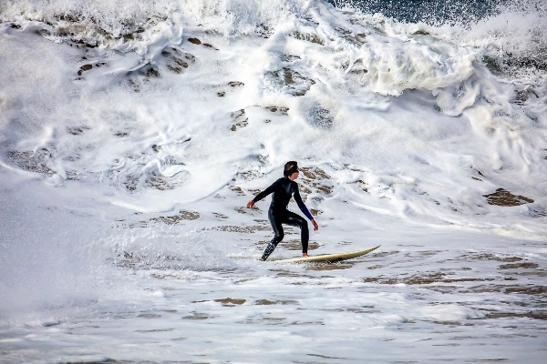
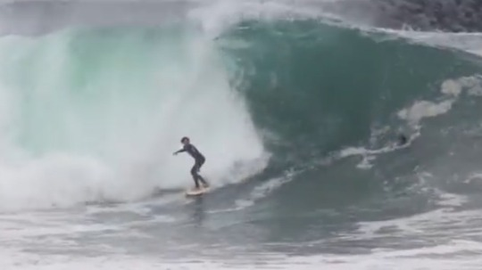
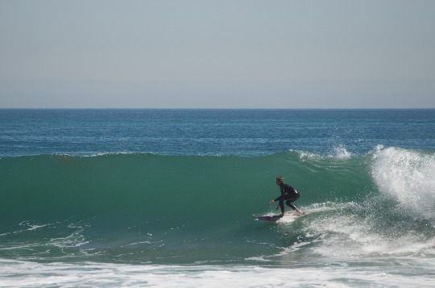
Traveling the World!
Out of all the things Kaden has done, what gets him most excited are the chances to travel around the world. He's been to places such as Fiji, Kiribati, Hawai'i, Yosemite, Havasupai,
Spain, Mexico,and is hoping to visit Alaska this summer!
Here are some photos of the places he's traveled to:
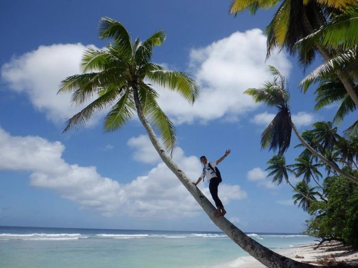
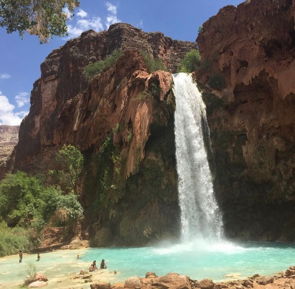
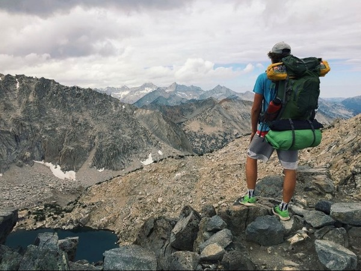
Trading Stocks & Crypto
As someone involved in the world of investing, Kaden is constantly trying to teach himself more about the incredible potential of the blockchain.
He has successfully invested in multiple coins, and participates in Discord chats daily in order to chase down the best new projects and investments.
Kaden recently participated in the annual MSB Stock Pitch Competition, here at BYU Provo, where members of the Finance Society compete to see who can
discover the most undervalued stock!
Here are some of his favorite coins and projects:
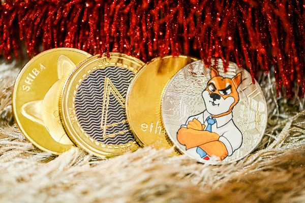
Photography
So, you might be telling yourself, "anyone can take a picture, right?" Well, Kaden thought so too before he dove into the world
of underwater film photography! After taking a photography class in High School, he reached out to an awesome friend named Brandon Jennings,
the founder of the Nikonos project, where he taught Kaden how to operate film cameras. More specifically, underwater film cameras that
could shoot killer pictures of waves and surfing. Kaden had never been so excited to learn and practice a skill before in his life.
The challenges of learning proper ISO, aperture, shutter speed for each angle, the lens and film types, and even how to develop the film by hand
in a darkroom were so intriguing to Kaden, that he began a love for photography.
Here are a few photos Kaden has taken from his film cameras:
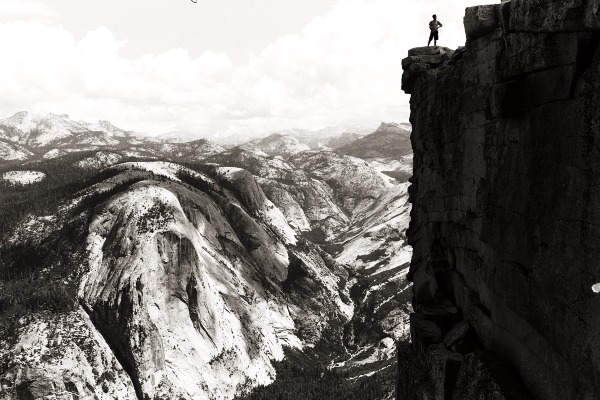
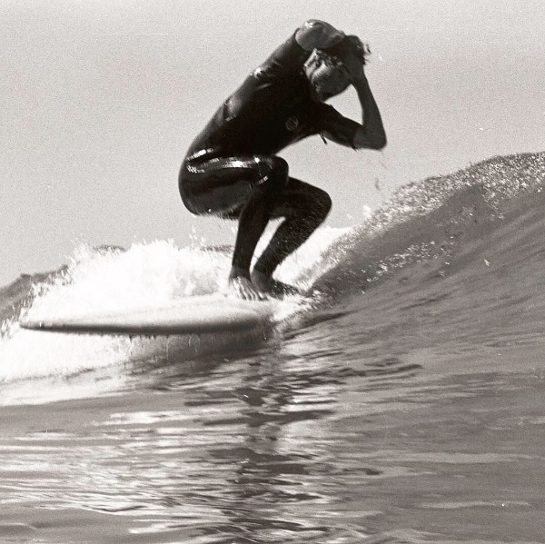
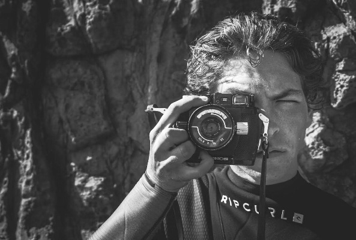
Stranded in Kiribati
Just to the north of Fiji, and south of the Marshall Islands, lies the small island nation of Kiribati. Most people have never even heard of it.
As a volunteer missionary for the Church of Jesus Christ of Latter-Day-Saints, Kaden spent two years in the islands
serving and teaching the locals. He was able to serve on the islands of Tarawa, Kiritimati, Fanning, Washington, Viti Levu, Oahu, and Big Island.
He learned the language of Kiribati, only spoken by Kiribati citizens, in order to communicate
with them on a day to day basis. His time was spent performing service projects like digging wells for people who had recently
moved, building houses, teach English classes, and helping others fish. In addition, him and his companions would go out and teach people about the gospel of Jesus Christ,
and saw many people turn there lives around to become hard-working, leading individuals. It was an incredible blessing, only at 18 years of age,
for Kaden to travel and immerse himself in an incredibly unique culture.
While Kaden was serving on the island of Kiritimati (beginning of 2022), him and the three other Elders he was serving with received word
that a pandemic had begun due to COVID-19. Before him and the three other missionaries could leave to return back to America in response to
the pandemic's uncertainty, Kiribati borders closed. Kaden and those three missionaries were officially stuck on Kiritimati island for the rest
of 2022 (nine months). No matter what strings the church or relatives could pull, the government refused to allow them to leave the island, for
fear that it could bring the sickness to their nation. Finally, after nine months of continuing to work on Kiritimati island,
the missionaries were able to board a small cargo ship that was passing by, and sail 2,000 miles to another island in which they could
fly back to America. Being stranded on Kiritimati island was one of the most defining moments of Kaden's life. It's not often you can say you were stuck
on a remote island for almost a year. It taught Kaden extremely valuable lessons about perseverance and adapting to others' cultures.
Kiribati still has a piece of his heart, and the relationships he created there will never diminish.
Check out a video that Kaden's friend made of his time serving in Kiribati:
Here are some photos of Kaden in Kiribati:
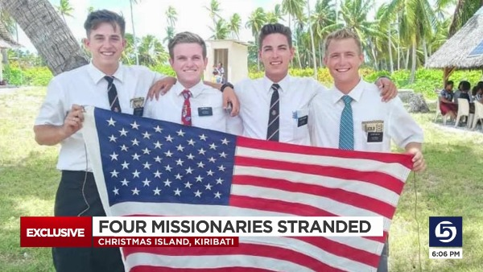
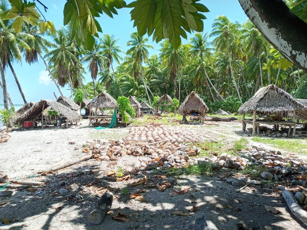
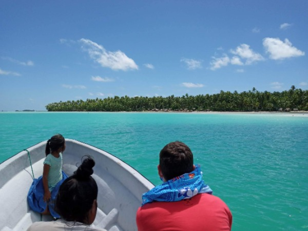
Another thing that Kaden has been interested in lately is Tableau. Check out a live tableau display of global debt!